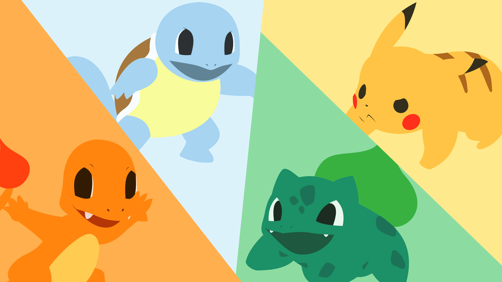

A cartoon is a creative visual medium that tells stories through animated or illustrated characters.

The main Pokémon in the show are Pikachu, Charizard, Bulbasaur, Squirtle, and Jigglypuff, with Pikachu being the iconic mascot of the series.
"Iconic Pokémon: Meet the Stars of the Beloved Series"
Pokémon is one of the most beloved franchises in the world, captivating fans for decades with its exciting adventures and unforgettable characters. Among the vast array of Pokémon, some have become icons of the series. Let’s meet a few of these fan favorites!
1. Pikachu
Pikachu, the face of Pokémon, is instantly recognizable with its bright yellow fur and rosy cheeks. Known for its loyalty to Ash and its powerful Thunderbolt attacks, Pikachu has captured hearts worldwide.
2. Charizard
Charizard is a fiery dragon that symbolizes strength and determination. As the evolved form of Charmander, it’s a powerhouse in battles and a fan-favorite for its majestic design.
3. Bulbasaur
Bulbasaur is one of the original starter Pokémon and is loved for its friendly demeanor and ability to control plants. Its evolution line reflects growth and resilience.
4. Squirtle
The adorable water turtle, Squirtle, is another original starter Pokémon. With its bubbly personality and water-based moves, it’s both cute and reliable in battle.
5. Jigglypuff
Known for its round shape and lullaby-like singing, Jigglypuff can put anyone to sleep—literally! Its mischievous yet endearing antics have made it a memorable character.
These Pokémon are more than just creatures in a show—they represent the spirit of adventure, friendship, and fun that Pokémon embodies. Whether you’re battling, exploring, or simply enjoying their stories, these icons remind us why we love the Pokémon world.